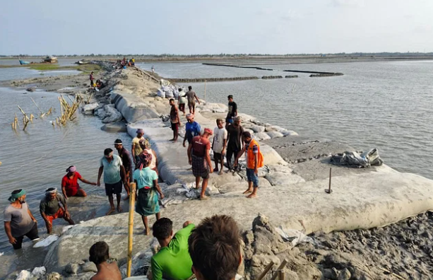

অবশেষে পাঁচ দিন পর মেরামত হলো কয়রার দশালিয়া বেড়িবাঁধ

খুলনার কয়রা উপজেলার দশালিয়া এলাকার কপোতাক্ষ নদের ভেঙে যাওয়া বাঁধ অবশেষে মেরামত
করা হয়েছে। শনিবার সকালে এলাকার তিন শতাধিক মানুষ বাঁধটি মেরামতে অংশ নেন। দুপুরের
জোয়ারের আগে তাঁরা বাঁধ মেরামতকাজ সম্পন্ন করেন। ফলে ভেঙে যাওয়ার পাঁচ দিন পর লোকালয়ে
জোয়ারের পানি ঢোকা বন্ধ হয়েছে।
শনিবার সকাল থেকেই স্থানীয় জনগণ বাঁধের স্থানে হাজির হন। মসজিদের মাইকে এলাকাবাসীকে ঝুড়ি
আর কোদাল নিয়ে বাঁধের কাজে আসার আহ্বান জানানো হয়। নিজেদের সম্পদ রক্ষার তাগিদে ভাঙা
বাঁধের কাছে কোদাল হাতে জড়ো হতে শুরু করেন মানুষ। পাউবোর কর্মকর্তারা এ সময় প্রতি ঘণ্টা
কাজের জন্য ৮০ টাকা করে মজুরি দেওয়ার ঘোষণা দেন। নদীতে ভাটার টানে পানি নামতে শুরু
ককরলেই শুরু হয় কাজ। দুপুরে নদীতে জোয়ার আসার আগ পর্যন্ত একটানা মাটি কেটে ও বস্তায় বালু
বভোরে বাঁধ উঁচু করার চেষ্টা চলে।
এলাকাবাসী জানান, বাঁধটি মেরামত না হলে আগামী ভরা কটালে আরও নতুন এলাকা প্লাবিত হতো।
যে কারণে স্থানীয় ও বহিরাগত মানুষ বাঁধ মেরামতকাজে এগিয়ে আসেন। তা ছাড়া পাউবো কর্মকর্তারা
এ কাজে সার্বিক সহযোগিতা করায় দ্রুততম সময়ের মধ্যে শেষ করা গেছে।
|